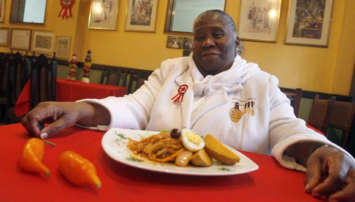

Nació en el Distrito de Lince, hija de Agustín Izquierdo y Luz Divina Gonzáles. Adquirió los conocimientos culinarios por parte de su madre, cocinera natural de San Luis de Cañete. Liduvina se trasladó muy joven a Lima, aunque siempre regresaba para ver a sus familiares. A los 8 años, empezó reemplazando a su madre, había que preparar el almuerzo para una aristocrática familia limeña conformada por ocho personas. Prácticamente, doña Teresa Izquierdo ha pasado toda la vida trabajando como cocinera, pero no le gusta que le digan “chef”. Con los consejos de su madre, comenzó preparando dulces (como el Turrón de Doña Pepa) para vender. A los 10 años, preparó su primer platillo peruano; a los 14, le llegó el turno a carapulca. Y así, poco a poco, fue dominando el arte de la cocina criolla tradicional. También se dio tiempo para cocinar a solicitud de algunas familias y en ocasiones especiales, como la Feria del Señor de los Milagros, peleas de gallos y concursos de caballos de paso. De esta manera, su fama de guisandera aumentó.
